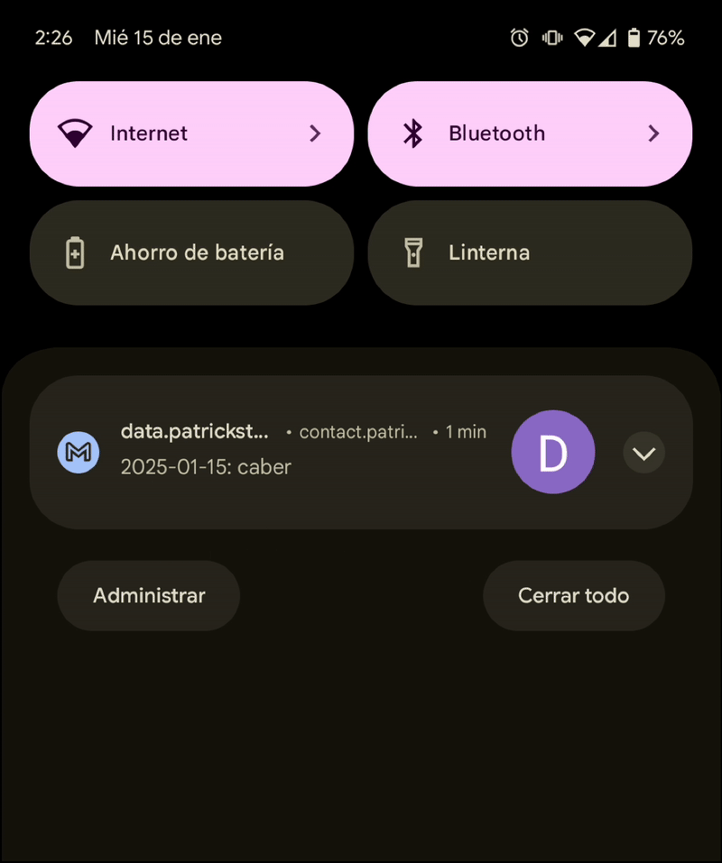

Hi, I'm Patrick Stephens
I'm a Product Manager with years of work experience, years working for industry-leading SaaS companies, and years building valuable products with great teams. My product career started by solving growth problems so users would find our site on Google. I've also built Search, Recommendation and AI Copilot products to solve discovery problems so users can find information they need. Regardless of what I work on, I always seek to provide value to my business and customers.
Do you need an evidence-based product strategy that aligns your customers' needs with business goals? A great PM crafts a clear vision of a world that solves your users' biggest problems and defines a roadmap that drives your team to this destination while achieving business outcomes on the way. Let's talk about your business goals and how I would approach reaching them. Let's build valuable products together.
Product Portfolio
Ask AI [Scribd]
AI assistant that answers questions about the document you're reading.

Ask AI launched as a 0-to-1 product to help our users find information when reading documents. By using in-product surveys we validated that our users' biggest problem was the time it takes to read and assess documents. This led us to ask: “How might we reduce the time it takes users to find what they're looking for?”
We brainstormed ideas that combined customer-centric approaches with technology-led solutions and proposed the hypothesis: “Adding an AI assistant to the document page will reduce the time it takes to find information.”
We created a design prototype for concept testing, validating the value of our hypothesis with positive user feedback. Following this, we conducted usability testing to refine our designs, while our engineers built a prototype for employee dogfooding. Employee feedback on quality led to guardrails and fine-tuning of the model pre-launch. Ask AI is currently in Beta.
Press
- Scribd Introduces Ask AI to World Subscribers in a Beta Release
- Scribd and Everand Introduce AI-Powered Discovery
Career Guide [Indeed]
Career content hub providing jobseekers with advice on how to get hired.


Career Guide is an SEO growth engine that publishes articles answering questions users ask on Google. Through painstorming with our content team, we surfaced their biggest bottleneck to publishing: the time it took to upload individual articles to WordPress. This led us to ask: “How might we remove the bottleneck to publishing articles?”
We brainstormed ideas that combined user-centric approaches with technology-driven solutions and proposed the hypothesis: “Migrating from WordPress to a CMS enabling bulk uploads will enable the content team to focus on editing and publishing articles, increasing SEO traffic.”
We gathered CMS requirements from our content team, and the engineering team developed a prototype. After validating the CMS enabled bulk uploads and met the needs of the content team, we migrated from WordPress to the new CMS. The new platform resulted in over 18k articles published within its first year and an increase in SEO traffic with each published article.
Language Flashcard Emailer [Personal Product]
Personalized flashcards in your email focusing on words you struggle with.
I'm learning Spanish to communicate with my Spanish-speaking family. As I immerse myself in reading, listening, and conversation, I encounter words that I've heard before but can't recall their meaning. This led me to ask: “How might I increase my rate of encountering vocabulary that I struggle with?”
I brainstormed ideas and hypothesized: “Emailing myself flashcards throughout the day will help me memorize words I struggle with.”
I created a Python script that imports words and how often I've looked them up from a spreadsheet I maintain into a dataframe. The script randomly selects 1 of the words, generates an example sentence using OpenAI's API, and emails me the flashcard. Additionally, cron jobs on my local machine run the script throughout the day. The flashcards have helped me memorize vocabulary I struggled with.